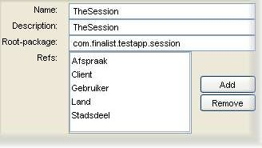

Creating services
For the purposes of JAG, services can be considered to 'contain' one or more entities. Services generated by JAG follow the
'service façade' pattern: i.e. the entities are responsible for transporting data to and from the persistence layer (database),
while the services provide the presentation layer with an interface to the entities.
In short, if you wish to expose functionality in your application that relates to data represented by a particular entity,
you will have to make sure that entity is wrapped by a service bean.
To create a service bean in your application, first select Edit > Add > service from the menu or click the
service button on the toolbar.
Configuring a service

The service that you initially create is blank - it has no name, and contains no entity. The service must
therefore be configured through the configuration screen, shown above. Here is a description of the various input fields:
- Name: the name used as a prefix to the Java classes generated for this service.
- Description: an optional natural-language description for this service, used for identification purposes.
- Root package: the package for the generated service classes.
Adding/Removing entities in a service
The service's configuration screen shows a list of 'Refs': entity references contained by that service.
Clicking the 'Add' button will open up a select list dialogue, which allows you to select one or more entities from your application.
The added entities will appear in the 'Refs' list, and may be deleted by selecting them and clicking the 'Remove' button.
| |
<<Start page